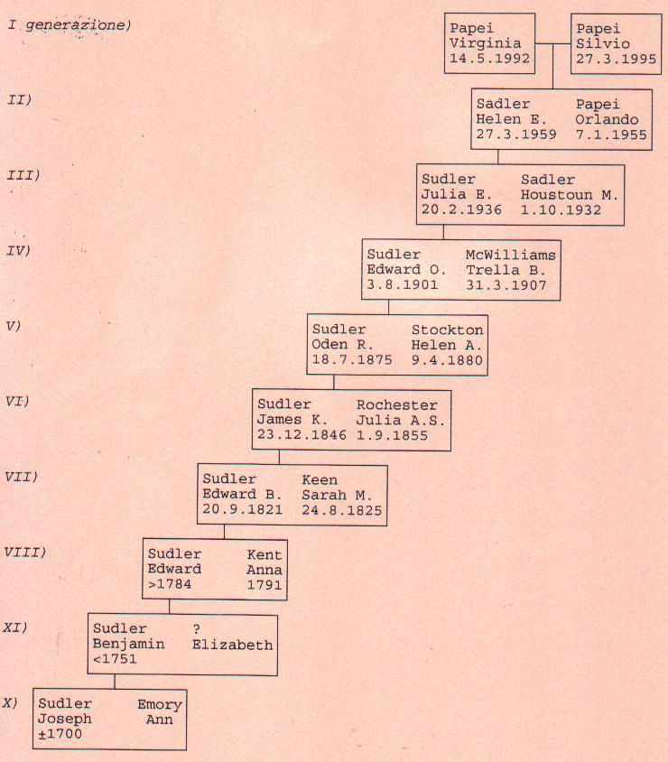

|
Nel nome di Dio, amen. Io
Joseph Sudler della contea
di Queen Anne, nell'isola
di Kent, godendo di buona
salute e in possesso delle
piene facoltà mentali,
ringrazio per queste cose
l'Onnipotente, ma ricordandomi che tutti gli uomini
sono nati per morire, detto
queste mie ultime volontà e
faccio un testamento nella
maniera e nella forma
seguente: per prima cosa
raccomando la mia anima
nelle mani del mio
Benedetto Salvatore Gesù
Cristo, poi che il mio
corpo venga sepolto in
maniera decorosa come
riterrà più opportuno il
nominato erede esecutore e
inoltre dispongo che tutti
gli oggetti che Dio mi ha
permesso di possedere,
vengano così spartiti:
Lascio in eredità a mio
figlio Emory Sudler la
striscia di terra dove
adesso abito, chiamata
"Sudlers fourtaine" e
lascio inoltre al citato
Emory e ai suoi futuri
eredi due strisce di
terra, chiamate "Sudlers
purchase" e "Sudlers
Island". Ma è mio desiderio
che il detto Emory non
reclami per se le due
strisce di terra chiamate "Sudlers fourtaine" e
"Sudlers purchase" fino a
che mia moglie resti mia
vedova. Lascio anche al
detto Emory il mio fucile
più bello e l'orologio che
è nell'ingresso, ma è mio
desiderio che questo
orologio non venga tolto
dalla casa fino a quando
sua madre sarà in vita.
Lascio ai miei tre figli
Joseph, John e Thomas tutte
le strisce di terra che
sono a Chester e che
comprai da Walter Smith
detto Sledmar, per un
totale di 800 acri (1 acro=
circa 4.000 mq.).
Lascio a mio figlio
Thomas tutta la parte della
terra a sud della Chappel
Rode, che dividerà così la
sua parte da quella del
fratello Joseph, aggiungendovi anche la terra dove
attualmente vive il
capitano John Seger, che la
comprò da Daniel Newman, e
tutte le rimanenti parti
dell'eredità di detto
Sledmar le lascio ai miei
due figli John e Joseph
Sudler.
Joseph avrà i 300 acri
che confinano con "Chappel
Rode", la cui strada
dividerà fino a "Land
Runes" la terra di John da
quella del suo fratello
Thomas.
Nella parte che toccherà
a Joseph c'è la piantagione
dove adesso vive e John
avrà la parte rimanente
della suddetta striscia
chiamata Sledmar, che è a
nord. La terra di Joseph
sarà divisa da quella del
suo fratello John con una
linea retta.
Lascio in più a mio
figlio Joseph, quindici
acri di terra chiamata
"Devenishes Chance" che
comprai da Richard Scotten
e se qualcuno dei miei tre
figli John, Joseph o Thomas
dovesse morire senza avere
eredi, l'eredità dovrà
essere divisa equamente tra
gli altri due e se due dei
miei tre figli John, Joseph
o Thomas, dovessero morire
senza eredi, il
sopravvissuto dei tre avrà
tutta la terra che ho
lasciato a Joseph e a suo
fratello John, mentre la
parte che ho lasciato a mio
figlio Thomas, andrà al mio
figlio più giovane Benjamin
e ai suoi futuri eredi.
Oltre alla terra, lascio
a mio figlio Joseph, quando
sua madre sarà morta, la
mia più grande specchiera
che sta nell'ingresso.
Oltre alla terra lascio a
mio figlio John un giovane
negro di nome Sam, una
ragazza negra di nome
Darkey e tutti i loro
eventuali futuri figli, un
puledro che dice di
appartenergli, il mio più
grande tavolo ovale di
noce, sei sedie di pelle
con il fondo un po'
sfilacciato, uno specchio
dorato di media grandezza
con la cornice di mogano,
due buoni materassi di
piuma insieme con i mobili
della camera, una pentola
nuova di ferro da dodici
galloni (un gallone=3,78
litri) e due cucchiai
grandi d'argento marchiati
E A S.
Oltre alla terra lascio a
mio figlio Thomas un
giovane negro di nome
Jacob, figlio del vecchio
Juday, una ragazza negra di
nome Byther e tutti i loro
eventuali futuri figli, una
cavalla baia, quella che
cavalco io, il secondo più
grande tavolo ovale di
noce, uno scrittoio inglese
di quercia, sei nuove sedie
di pelle, due buoni
materassi di piuma con i
mobili della camera, uno
specchio dorato di media
grandezza con la cornice di
mogano, una pentola di
ferro da dodici galloni e
due grandi cucchiai di
argento marchiati E A S .
Lascio a mio figlio
Benjamin Sudler e ai suoi
futuri eredi, 200 acri di
terra vicino a Chester, che
comprai da William Clayton
e Thomas Butler, chiamati
"Shipperds forrist". Lascio
a lui, il suddetto Benjamin
una donna negra di nome
Sobina e suo figlio Jacob,
una ragazza negra di nome
Moll, un'altra di nome Beck
e tutti i loro eventuali
futuri figli, una puledra
baia, nata nell'isola (di
Kent) da un'altra puledra,
il mio terzo più grande
tavolo di noce ovale, una
nuova cassapanca di noce
con un buon chiavistello,
uno specchio dorato di
media grandezza con la
cornice di mogano, sei
nuove seggiole di pelle,
due buoni materassi di
piuma con i mobili della
camera, una pentola di
ferro da dodici galloni e
due cucchiai grandi
d'argento marchiati E A S .
Lascio a mia figlia Mary
Ann e ai suoi futuri eredi
218 acri di terra vicino a
Chester, 150 acri che
comprai da Morris e Thomas
Cloke e i 68 acri che poi
aggiunsi agli stessi.
Poi lascio alla suddetta
Mary Ann una donna negra di
nome Dynah, un ragazzo
negro di nome Phill, una
ragazza negra di nome Sarah
una che si chiama Susannah,
un'altra che si chiama
Grace e tutti i loro
eventuali futuri figli, un
cassettone di noce, un
tavolo nuovo di noce da
thè, un tavolincino di
noce, un baule in buono
stato ricoperto con pelle
di foca, uno specchio
dorato con la cornice di
mogano, sei cucchiaini da
thè "Straners & Tongs"
marchiati E A S, due grandi
cucchiai d'argento marchiati E A S, il mio miglior
servito da thè di
porcellana, una dozzina dei
miei migliori piatti di
porcellana, sei buone
seggiole di vimini, due
buoni materassi di piuma
con i mobili della camera,
un grande calderone di
ottone, il mio nuovo
calesse completo della
bardatura e la mia giovane
cavalla nera sorella di
un'altra mia cavalla.
Lascio alla mia adorata
moglie Ann Sudler, un negro
di nome Bordley, un altro
chiamato Catow, una negra
di nome Juday, una che si
chiama Phillis, una giovane
di nome Hannah e tutti i
loro eventuali futuri
figli, un servo bianco di
nome Andrew Hensman, una
pelliccia di castoro, due
buoni materassi di piuma
con i mobili della camera,
un'angoliera nuova con
dentro tutta la porcellana
eccetto quella lasciata a
mia figlia Mary Ann, un
paio di grandi ruote di
carro con il cerchione di
ferro, un calesse nuovo, la
cavalla di nome Rock con la
sua bardatura e 60 sterline
di moneta corrente nel
Maryland.
Dopo che saranno pagati
tutti i miei debiti, le
tasse di successione e la
parte spettante a mia
moglie, i miei beni residui
dovranno essere divisi
equamente fra i miei
quattro figli: John,
Thomas, Benjamin e Mary
Ann. Delego così la mia
cara moglie Ann Sudler ad
essere la mia unica
esecutrice del mio ultimo
testamento, revocando tutti
gli altri precedentemente
da me scritti, come
testimoniato dalla mia
firma e dal timbro della
famiglia, apposto questo
giorno 23 del giugno
dell'anno Domini 1755.
Firmato, sigillato con cera
lacca e consegnato.
Joseph Sudler
Letto e dichiarato davanti
a:
William Price
Contea di Queen Ann
William Price, Elias
Meconnikin e Johann
Christian Port, tre dei
testimoni firmatari del
presente testamento, essendo stati vincolati da un
solenne giuramento fatto
sulla Bibbia, depongono e
dicono che hanno visto il
testatore Joseph Sudler
firmare lo stesso
testamento e hanno sentito
che lui dichiarava
pubblicamente che quelle
erano le sue ultime
volontà. Secondo le loro
osservazioni, in quel
momento egli era al meglio
delle sue condizioni
fisiche, mentali e di
memoria e apposero le loro
rispettive firme come
testimoni di ciò che fu
detto in presenza del detto
testatore secondo le sue
volontà. Tale giuramento fu
fatto dai detti testimoni
alla presenza dell'erede
Emory Sudler e lo stesso
Emory Sudler non si
opponeva al ratificare ciò
che era stato voluto in
questo testamento.
Giurato davanti a me
William Tilghman
|
|
 |